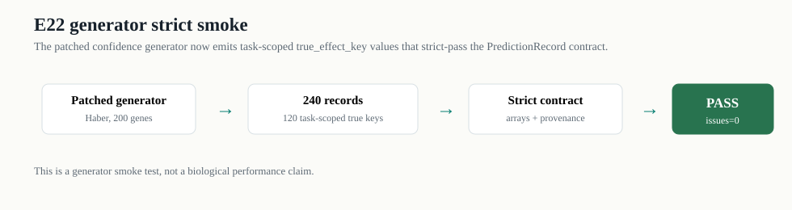

E22 generator strict smoke
验证修改后的生成器新产物是否直接满足 strict PredictionRecord 合同。结论：Haber 200-gene smoke strict pass，issue_count = 0。

Summary
| runtime_dir | dataset_names | n_records | n_task_groups | n_predictors | predictors | n_unique_true_effect_keys | n_unique_predicted_effect_keys | strict_status | strict_issue_count | strict_issues |
|---|---|---|---|---|---|---|---|---|---|---|
| runtime/e22_generator_strict_smoke_20260707 | Haber | 240 | 120 | 2 | ContextSimBaseline,V0StrongBaseline | 120 | 240 | pass | 0 |
Key sample
| record_id | task_key | split | predictor_name | predicted_effect_key | true_effect_key |
|---|---|---|---|---|---|
| v2_rec_000000 | Haber::task_00000 | train | V0StrongBaseline | v2_rec_000000::predicted_effect | Haber::fold0::train::task_00000::true_effect |
| v2_rec_000001 | Haber::task_00001 | train | V0StrongBaseline | v2_rec_000001::predicted_effect | Haber::fold0::train::task_00001::true_effect |
| v2_rec_000002 | Haber::task_00003 | train | V0StrongBaseline | v2_rec_000002::predicted_effect | Haber::fold0::train::task_00003::true_effect |
| v2_rec_000003 | Haber::task_00004 | train | V0StrongBaseline | v2_rec_000003::predicted_effect | Haber::fold0::train::task_00004::true_effect |
| v2_rec_000004 | Haber::task_00006 | train | V0StrongBaseline | v2_rec_000004::predicted_effect | Haber::fold0::train::task_00006::true_effect |
| v2_rec_000005 | Haber::task_00009 | train | V0StrongBaseline | v2_rec_000005::predicted_effect | Haber::fold0::train::task_00009::true_effect |
| v2_rec_000006 | Haber::task_00010 | train | V0StrongBaseline | v2_rec_000006::predicted_effect | Haber::fold0::train::task_00010::true_effect |
| v2_rec_000007 | Haber::task_00011 | train | V0StrongBaseline | v2_rec_000007::predicted_effect | Haber::fold0::train::task_00011::true_effect |
| v2_rec_000008 | Haber::task_00012 | train | V0StrongBaseline | v2_rec_000008::predicted_effect | Haber::fold0::train::task_00012::true_effect |
| v2_rec_000009 | Haber::task_00013 | train | V0StrongBaseline | v2_rec_000009::predicted_effect | Haber::fold0::train::task_00013::true_effect |
| v2_rec_000010 | Haber::task_00015 | train | V0StrongBaseline | v2_rec_000010::predicted_effect | Haber::fold0::train::task_00015::true_effect |
| v2_rec_000011 | Haber::task_00016 | train | V0StrongBaseline | v2_rec_000011::predicted_effect | Haber::fold0::train::task_00016::true_effect |
| v2_rec_000012 | Haber::task_00018 | train | V0StrongBaseline | v2_rec_000012::predicted_effect | Haber::fold0::train::task_00018::true_effect |
| v2_rec_000013 | Haber::task_00019 | train | V0StrongBaseline | v2_rec_000013::predicted_effect | Haber::fold0::train::task_00019::true_effect |
| v2_rec_000014 | Haber::task_00021 | train | V0StrongBaseline | v2_rec_000014::predicted_effect | Haber::fold0::train::task_00021::true_effect |
| v2_rec_000015 | Haber::task_00022 | train | V0StrongBaseline | v2_rec_000015::predicted_effect | Haber::fold0::train::task_00022::true_effect |
| v2_rec_000016 | Haber::task_00002 | val | V0StrongBaseline | v2_rec_000016::predicted_effect | Haber::fold0::val::task_00002::true_effect |
| v2_rec_000017 | Haber::task_00005 | val | V0StrongBaseline | v2_rec_000017::predicted_effect | Haber::fold0::val::task_00005::true_effect |
| v2_rec_000018 | Haber::task_00007 | val | V0StrongBaseline | v2_rec_000018::predicted_effect | Haber::fold0::val::task_00007::true_effect |
| v2_rec_000019 | Haber::task_00008 | test | V0StrongBaseline | v2_rec_000019::predicted_effect | Haber::fold0::test::task_00008::true_effect |
| v2_rec_000020 | Haber::task_00014 | test | V0StrongBaseline | v2_rec_000020::predicted_effect | Haber::fold0::test::task_00014::true_effect |
| v2_rec_000021 | Haber::task_00017 | test | V0StrongBaseline | v2_rec_000021::predicted_effect | Haber::fold0::test::task_00017::true_effect |
| v2_rec_000022 | Haber::task_00020 | test | V0StrongBaseline | v2_rec_000022::predicted_effect | Haber::fold0::test::task_00020::true_effect |
| v2_rec_000023 | Haber::task_00023 | test | V0StrongBaseline | v2_rec_000023::predicted_effect | Haber::fold0::test::task_00023::true_effect |
| v2_rec_000024 | Haber::task_00000 | train | ContextSimBaseline | v2_rec_000024::predicted_effect | Haber::fold0::train::task_00000::true_effect |
| v2_rec_000025 | Haber::task_00001 | train | ContextSimBaseline | v2_rec_000025::predicted_effect | Haber::fold0::train::task_00001::true_effect |
| v2_rec_000026 | Haber::task_00003 | train | ContextSimBaseline | v2_rec_000026::predicted_effect | Haber::fold0::train::task_00003::true_effect |
| v2_rec_000027 | Haber::task_00004 | train | ContextSimBaseline | v2_rec_000027::predicted_effect | Haber::fold0::train::task_00004::true_effect |
| v2_rec_000028 | Haber::task_00006 | train | ContextSimBaseline | v2_rec_000028::predicted_effect | Haber::fold0::train::task_00006::true_effect |
| v2_rec_000029 | Haber::task_00009 | train | ContextSimBaseline | v2_rec_000029::predicted_effect | Haber::fold0::train::task_00009::true_effect |